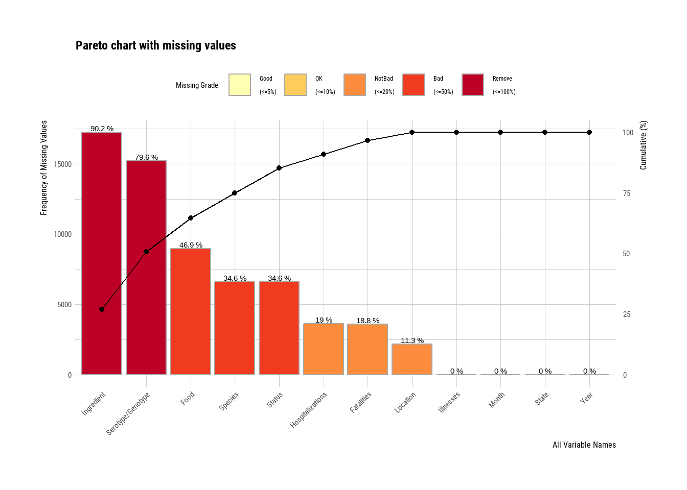

library(dplyr)library(stringr)# Data Structure Visualizationlibrary(skimr)# Setting Pathslibrary(here)
here() starts at C:/Users/weifa/OneDrive/Documents/GitKraken/MADA/data analysis/Weifan-Kailin-MADA-project
# Information About NAslibrary(dlookr)
Attaching package: 'dlookr'
The following object is masked from 'package:tidyr':
extract
The following object is masked from 'package:base':
transform
Loading Data
# Path to Datadata_location <-here("data","raw_data","foodborne_outbreaks.csv")training_data <-read_csv(data_location)
Rows: 19119 Columns: 12
── Column specification ────────────────────────────────────────────────────────
Delimiter: ","
chr (8): Month, State, Location, Food, Ingredient, Species, Serotype/Genotyp...
dbl (4): Year, Illnesses, Hospitalizations, Fatalities
ℹ Use `spec()` to retrieve the full column specification for this data.
ℹ Specify the column types or set `show_col_types = FALSE` to quiet this message.
There are several ways we can look at the datasets’ structures.
Training Data
str(training_data)
spc_tbl_ [19,119 × 12] (S3: spec_tbl_df/tbl_df/tbl/data.frame)
$ Year : num [1:19119] 1998 1998 1998 1998 1998 ...
$ Month : chr [1:19119] "January" "January" "January" "January" ...
$ State : chr [1:19119] "California" "California" "California" "California" ...
$ Location : chr [1:19119] "Restaurant" NA "Restaurant" "Restaurant" ...
$ Food : chr [1:19119] NA "Custard" NA "Fish, Ahi" ...
$ Ingredient : chr [1:19119] NA NA NA NA ...
$ Species : chr [1:19119] NA NA NA "Scombroid toxin" ...
$ Serotype/Genotype: chr [1:19119] NA NA NA NA ...
$ Status : chr [1:19119] NA NA NA "Confirmed" ...
$ Illnesses : num [1:19119] 20 112 35 4 26 25 8 4 21 3 ...
$ Hospitalizations : num [1:19119] 0 0 0 0 3 3 0 3 NA NA ...
$ Fatalities : num [1:19119] 0 0 0 0 0 0 0 0 NA 0 ...
- attr(*, "spec")=
.. cols(
.. Year = col_double(),
.. Month = col_character(),
.. State = col_character(),
.. Location = col_character(),
.. Food = col_character(),
.. Ingredient = col_character(),
.. Species = col_character(),
.. `Serotype/Genotype` = col_character(),
.. Status = col_character(),
.. Illnesses = col_double(),
.. Hospitalizations = col_double(),
.. Fatalities = col_double()
.. )
- attr(*, "problems")=<externalptr>
summary(training_data)
Year Month State Location
Min. :1998 Length:19119 Length:19119 Length:19119
1st Qu.:2001 Class :character Class :character Class :character
Median :2005 Mode :character Mode :character Mode :character
Mean :2006
3rd Qu.:2010
Max. :2015
Food Ingredient Species Serotype/Genotype
Length:19119 Length:19119 Length:19119 Length:19119
Class :character Class :character Class :character Class :character
Mode :character Mode :character Mode :character Mode :character
Status Illnesses Hospitalizations Fatalities
Length:19119 Min. : 2.00 Min. : 0.000 Min. : 0.000
Class :character 1st Qu.: 3.00 1st Qu.: 0.000 1st Qu.: 0.000
Mode :character Median : 8.00 Median : 0.000 Median : 0.000
Mean : 19.54 Mean : 0.948 Mean : 0.022
3rd Qu.: 19.00 3rd Qu.: 1.000 3rd Qu.: 0.000
Max. :1939.00 Max. :308.000 Max. :33.000
NA's :3625 NA's :3601
# Plotting NAs of Training Dataplot_na_pareto(training_data)

It appears that the training data contains the following variables: General - Year, Month (Time) - State (Location) - Food, Ingredient (Vehicle of Transmission) - Species - Status Health Outcomes - Illnesses - Hospitalizations - Fatalities
Analysis Data
str(analysis_data)
tibble [42,619 × 21] (S3: tbl_df/tbl/data.frame)
$ Year : num [1:42619] 2009 2009 2009 2009 2009 ...
$ Month : num [1:42619] 1 1 2 1 1 1 1 1 1 2 ...
$ State : chr [1:42619] "Minnesota" "Minnesota" "Minnesota" "Minnesota" ...
$ Primary Mode : chr [1:42619] "Person-to-person" "Food" "Person-to-person" "Person-to-person" ...
$ Etiology : chr [1:42619] "Norovirus Genogroup II" "Norovirus" "Norovirus" "Norovirus unknown" ...
$ Serotype or Genotype : chr [1:42619] "unknown" NA NA NA ...
$ Etiology Status : chr [1:42619] "Confirmed" "Suspected" "Suspected" "Confirmed" ...
$ Setting : chr [1:42619] "Hotel/motel" "Restaurant - Sit-down dining" "Other, specify" "Restaurant" ...
$ Illnesses : num [1:42619] 21 2 50 24 16 5 3 21 7 5 ...
$ Hospitalizations : num [1:42619] 0 0 0 0 0 0 0 0 0 0 ...
$ Info on Hospitalizations : num [1:42619] 19 2 0 24 8 5 3 21 7 5 ...
$ Deaths : num [1:42619] 0 0 0 0 0 0 0 0 0 0 ...
$ Info on Deaths : num [1:42619] 19 2 50 24 16 5 3 21 7 5 ...
$ Food Vehicle : chr [1:42619] NA NA NA NA ...
$ Food Contaminated Ingredient: chr [1:42619] NA NA NA NA ...
$ IFSAC Category : chr [1:42619] NA NA NA NA ...
$ Water Exposure : chr [1:42619] NA NA NA NA ...
$ Water Type : chr [1:42619] NA NA NA NA ...
$ Animal Type : chr [1:42619] NA NA NA NA ...
$ Animal Type Specify : chr [1:42619] NA NA NA NA ...
$ Water Status : chr [1:42619] NA NA NA NA ...
summary(analysis_data)
Year Month State Primary Mode
Min. :2009 Min. : 1.000 Length:42619 Length:42619
1st Qu.:2012 1st Qu.: 2.000 Class :character Class :character
Median :2015 Median : 4.000 Mode :character Mode :character
Mean :2015 Mean : 5.473
3rd Qu.:2017 3rd Qu.: 9.000
Max. :2020 Max. :12.000
Etiology Serotype or Genotype Etiology Status Setting
Length:42619 Length:42619 Length:42619 Length:42619
Class :character Class :character Class :character Class :character
Mode :character Mode :character Mode :character Mode :character
Illnesses Hospitalizations Info on Hospitalizations Deaths
Min. : 2.00 Min. : 0.000 Min. : 0.00 Min. : 0.000
1st Qu.: 7.00 1st Qu.: 0.000 1st Qu.: 3.00 1st Qu.: 0.000
Median : 16.00 Median : 0.000 Median : 11.00 Median : 0.000
Mean : 26.43 Mean : 0.781 Mean : 21.04 Mean : 0.042
3rd Qu.: 33.00 3rd Qu.: 1.000 3rd Qu.: 27.00 3rd Qu.: 0.000
Max. :2500.00 Max. :204.000 Max. :2500.00 Max. :33.000
NA's :3550 NA's :2893 NA's :3390
Info on Deaths Food Vehicle Food Contaminated Ingredient
Min. : 0.00 Length:42619 Length:42619
1st Qu.: 4.00 Class :character Class :character
Median : 12.00 Mode :character Mode :character
Mean : 22.04
3rd Qu.: 29.00
Max. :2500.00
NA's :2774
IFSAC Category Water Exposure Water Type Animal Type
Length:42619 Length:42619 Length:42619 Length:42619
Class :character Class :character Class :character Class :character
Mode :character Mode :character Mode :character Mode :character
Animal Type Specify Water Status
Length:42619 Length:42619
Class :character Class :character
Mode :character Mode :character
# Plotting NAs of Training Dataplot_na_pareto(analysis_data)
It appears that the training data contains the following variables: General - Year, Month (Time) - State (Location) - Primary Mode (Vehicle of Transmission) - Food Vehicle - Food Contaminated Ingredient - Water Exposure - Water Type - Water Status - Animal Type - Animal Type Specify - Etiology - Serotype or Genotype - Etiology Status - Setting - IFSAC Category Health Outcomes - Illnesses - Hospitalizations - Info on Hospitalizations - Deaths - Info on Deaths
Because the analysis dataset contains more than just foodborne outbreaks, we want to specify it to just foodborne illnesses.
# Plot of NAs After Limiting to Analysis Data to Foodplot_na_pareto(analysis_data %>%filter(`Primary Mode`=="Food"))
Given that “Status” and “Etiology Status” refer to laboratory confirmations, we will filter our case definitions to be only laboratory-confirmed pathogens.
Cleaning
Based on the data inspections completed above, we want to remove “Ingredient” and “Serotype/Genotype” from the training dataset (> 80% data missing), and we want to remove all variables unrelated to foodborne illness for the analysis dataset (ex: animal type, water type, etc.) in addition to columns with many NAs.
##Since there are over 3000+ different categories for food, we want to organize them by adding a IFSAC category column #categorize everything else other than vectors into other
Removing anyone who had “faulty” or missing data is one approach. It’s often not the best. based on your question and your analysis approach, you might want to do cleaning differently (e.g. keep individuals with some missing information).